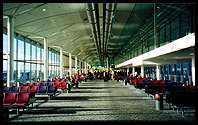

If your browser supports style sheets, and I haven't completely
bodged the style sheet for these pages this text should be fairly legible. To this aim I am using the Verdana font
( WHY? )
in the default font size.
If your browser supports style sheets, and I haven't completely
bodged the style sheet for these pages this text should be fairly legible. To this aim I am using the Verdana font
( WHY? )
in the default font size. All of the pages on Hilton Harbour are generated from a single page template. The design and HTML implementation of both this template and the content of each page follow certain principles, which are explained on this page. These principles, and the reasons behind them, are generally not original; I include them here so that Hilton Harbour is an example, rather than as a style guide.
My view on graphics, which is reflected in this site, is that it can be worth including
but all other graphics are a waste of time and space. I share Jakob Nielson's reasons for excluding most graphics.
If your browser supports style sheets, and I haven't completely
bodged the style sheet for these pages this text should be fairly legible. To this aim I am using the Verdana font
( WHY? )
in the default font size.
I wonder what proportion of images on web pages were just lifted from other web pages. The two reasons for not copying graphics from other web pages should both be obvious:
I don't use frames because I don't like them. I don't like them because of some fundamental problems with frames and the way that frames sacrifice user-interface stability.
There are surprising number of web pages with 'under construction' notices. Saying that a page page is 'under construction' merely means that the author intends to change it in the future. Presumably, then, none of the other pages will ever be updated. That's like a salesman saying 'I'll be honest with you', which makes you doubt everything that he said previously. This was already old in 1995: on Suck.com.
Invalid HTML guarantees unpredictable results in different browsers and environments because there is no standard way of rendering invalid HTML - the browser just makes a best guess. What looks okay on your browser may well be a mess on someone else's. The results of using Cascading Style Sheets with invalid HTML are even more unpredictable.
Style sheets should be checked for the same reason, using a tool like the W3C CSS Validation Service or CSSCheck.
The WDG HTML Validator is useful because you can upload files for validation, from browsers that support file upload.

{kind=link}